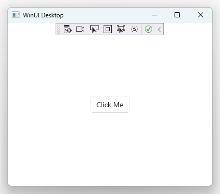
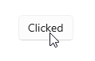
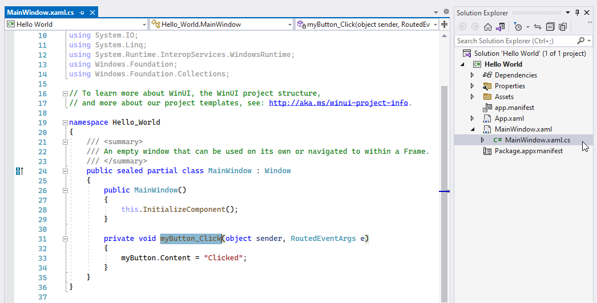
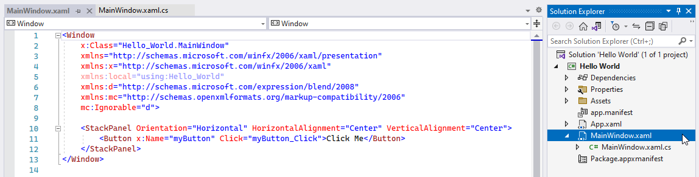
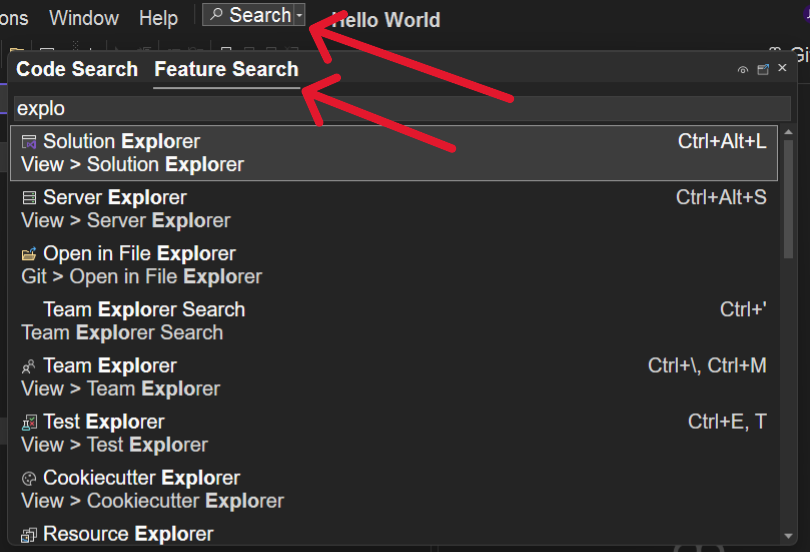
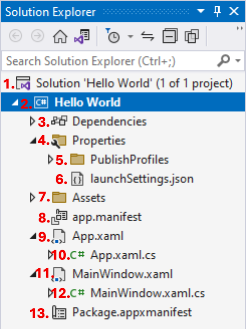
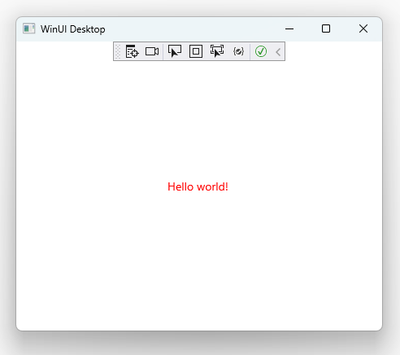
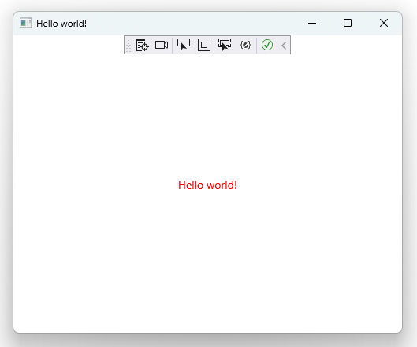

Build a Hello World app using C# and WinUI / Windows App SDK
In this how-to, we'll use Visual Studio 2022, WinUI, and Windows App SDK to build a Windows desktop app that displays "Hello world!" when launched:

This how-to is targeted at beginners and makes no assumptions about your familiarity with Windows desktop development.
Prerequisites
This tutorial uses Visual Studio and builds on the WinUI blank app template. To get set up, follow the instructions in Get started with WinUI. You'll install Visual Studio, configure it for developing apps with WinUI, create the Hello World project, and make sure you have the latest version of WinUI.
When you've done that, come back here to learn more about the Hello World project and make some updates to it.
Review the blank app project
The WinUI project templates in Visual Studio contain everything you need to build and run your app. The Blank App template creates a Window with an interactive Button that looks like this when you run it in debug mode.

Click the Click Me button for a demonstration of event handling:

In this case, a Button control's Click event is bound to the myButton_Click event handler located in MainWindow.xaml.cs:

While MainWindow.xaml.cs contains our main window's business logic concerns in the form of a code-behind file, its presentation concerns live in MainWindow.xaml:

This separation of business logic and presentation concerns lets you bind data and events to and from your application's UI using a consistent application development pattern.
The project's file structure
Let's review the project's file structure before making code changes. This is located in the Solution Explorer.
Tip
To locate features like the Solution Explorer, click on Search on navigation bar and use the Feature Search option.

The project's file structure currently looks like this:

This table describes the files, starting from the top and working down:
| File Name and Image Reference Number |
Description |
|---|---|
Solution 'Hello World'1. |
This is a solution file, a logical container for your projects. Projects are often apps, but they can also be supporting class libraries. |
Hello World 2. |
This is a project file, a logical container for your app's files. |
Dependencies 3. |
Your app depends on frameworks (like .NET and the Windows SDK) and packages (like Windows App SDK). As you introduce more sophisticated functionality and third-party libraries into your app, additional dependencies will appear here. |
Properties 4. |
By convention, WinUI projects place publish profiles and launch configuration files in this folder. |
PublishProfiles 5. |
Your publish profiles specify your app's publishing configuration across a variety of platforms. |
launchSettings.json 6. |
This file lets you configure launch profiles that can be used when running your app via dotnet run. |
Assets 7. |
This folder contains your app's logo, images, and other media assets. |
app.manifest 8. |
This app manifest file contains configuration related to the way that Windows displays your app when installed on user devices. |
App.xaml 9. |
This markup file specifies the shared, globally accessible resources that your app depends on. |
App.xaml.cs 10. |
This code-behind file represents the entry point to your app's business logic. It's responsible for creating and activating an instance of your MainWindow. |
MainWindow.xaml 11. |
This markup file contains the presentation concerns for your app's main window. |
MainWindow.xaml.cs 12. |
This code-behind file contains the business logic concerns associated with your app's main window. |
Package.appxmanifest 13. |
This package manifest file lets you configure publisher information, logos, processor architectures, and other details that determine how your app appears in the Windows Store. |
Display "Hello world!"
To display "Hello world!" instead of the "Click me" button, navigate to MainWindow.xaml. You should see a StackPanel control's XAML markup:
<StackPanel Orientation="Horizontal" HorizontalAlignment="Center" VerticalAlignment="Center">
<Button x:Name="myButton" Click="myButton_Click">Click Me</Button>
</StackPanel>
Tip
You'll frequently refer to API reference docs while building Windows apps. StackPanel's reference docs tell you more about the StackPanel control and how to customize it.
Let's update the StackPanel control to display Hello world! with red text:
<StackPanel Orientation="Horizontal" HorizontalAlignment="Center" VerticalAlignment="Center">
<TextBlock x:Name="myText" Text="Hello world!" Foreground="Red"/>
</StackPanel>
If you try to run your app now, Visual Studio will throw an error along the lines of The name 'myButton' does not exist in the current context. This is because we updated the presentation layer with a new control, but we didn't update the old control's business logic in our code-behind file.
Navigate to MainWindow.xaml.cs and delete the myButton_Click event handler. We can do this because we've replaced the interactive Click me button with static Hello world! text. Our main window's business logic should now look like this:
public sealed partial class MainWindow : Window
{
public MainWindow()
{
this.InitializeComponent();
}
// ↓ you can delete this ↓
//private void myButton_Click(object sender, RoutedEventArgs e)
//{
// myButton.Content = "Clicked";
//}
}
Reset your app by selecting Build > Rebuild Solution from the menu or pressing Ctrl + Shift + B. Then Start your app again by clicking the "Start" button in the Visual Studio toolbar or by pressing F5.
The app will update and you should see a red Hello world!:

Update your app's title bar
Add this.Title = "Hello world!"; to your MainWindow.xaml.cs code-behind file:
public MainWindow()
{
this.InitializeComponent();
this.Title = "Hello world!"; // <- this is new
}
If you restart your app, you should now see Hello world! in both the body and title bar:

Congratulations! You've built your first WinUI app with Windows App SDK and C#.
Recap
Here's what you accomplished in this how-to:
- You started with Visual Studio's project template.
- You experienced an event handler that bound a
Buttoncontrol'sClickevent to a UI update. - You familiarized yourself with the convention of separating presentation concerns from business logic using tightly-coupled XAML markup files and C# code-behind files, respectively.
- You reviewed the default WinUI project file structure.
- You modified both the presentation layer (XAML markup) and business logic (code-behind) to support a new
TextBlockcontrol within aStackPanel. - You reviewed reference docs to better understand the
StackPanelcontrol's properties. - You updated your main window's title bar.
Full code files
<!-- MainWindow.xaml -->
<Window
x:Class="Hello_World.MainWindow"
xmlns="http://schemas.microsoft.com/winfx/2006/xaml/presentation"
xmlns:x="http://schemas.microsoft.com/winfx/2006/xaml"
xmlns:local="using:Hello_World"
xmlns:d="http://schemas.microsoft.com/expression/blend/2008"
xmlns:mc="http://schemas.openxmlformats.org/markup-compatibility/2006"
mc:Ignorable="d">
<StackPanel Orientation="Horizontal" HorizontalAlignment="Center" VerticalAlignment="Center">
<TextBlock x:Name="myText" Text="Hello world!" Foreground="Red"/>
</StackPanel>
</Window>
// MainWindow.xaml.cs
using Microsoft.UI.Xaml;
using Microsoft.UI.Xaml.Controls;
using Microsoft.UI.Xaml.Controls.Primitives;
using Microsoft.UI.Xaml.Data;
using Microsoft.UI.Xaml.Input;
using Microsoft.UI.Xaml.Media;
using Microsoft.UI.Xaml.Navigation;
using System;
using System.Collections.Generic;
using System.IO;
using System.Linq;
using System.Runtime.InteropServices.WindowsRuntime;
using Windows.Foundation;
using Windows.Foundation.Collections;
namespace Hello_World
{
public sealed partial class MainWindow : Window
{
public MainWindow()
{
this.InitializeComponent();
this.Title = "Hello world!";
}
}
}
<!-- App.xaml -->
<Application
x:Class="Hello_World.App"
xmlns="http://schemas.microsoft.com/winfx/2006/xaml/presentation"
xmlns:x="http://schemas.microsoft.com/winfx/2006/xaml"
xmlns:local="using:Hello_World">
<Application.Resources>
<ResourceDictionary>
<ResourceDictionary.MergedDictionaries>
<XamlControlsResources xmlns="using:Microsoft.UI.Xaml.Controls" />
<!-- Other merged dictionaries here -->
</ResourceDictionary.MergedDictionaries>
<!-- Other app resources here -->
</ResourceDictionary>
</Application.Resources>
</Application>
// App.xaml.cs
using Microsoft.UI.Xaml;
using Microsoft.UI.Xaml.Controls;
using Microsoft.UI.Xaml.Controls.Primitives;
using Microsoft.UI.Xaml.Data;
using Microsoft.UI.Xaml.Input;
using Microsoft.UI.Xaml.Media;
using Microsoft.UI.Xaml.Navigation;
using Microsoft.UI.Xaml.Shapes;
using System;
using System.Collections.Generic;
using System.IO;
using System.Linq;
using System.Runtime.InteropServices.WindowsRuntime;
using Windows.ApplicationModel;
using Windows.ApplicationModel.Activation;
using Windows.Foundation;
using Windows.Foundation.Collections;
namespace Hello_World
{
public partial class App : Application
{
public App()
{
this.InitializeComponent();
}
protected override void OnLaunched(Microsoft.UI.Xaml.LaunchActivatedEventArgs args)
{
m_window = new MainWindow();
m_window.Activate();
}
private Window m_window;
}
}
FAQ
Q: What's the difference between WinUI and WinUI 3?
In the context of this article, WinUI and WinUI 3 are the same thing. The term "WinUI 3" was used to refer to the latest version of the Windows UI Library, which is a part of the Windows App SDK. These apps are now simply referred to as "WinUI" apps. WinUI 2 is the previous version of the Windows UI Library, which is still supported for building UWP apps but is not recommended for new projects.
Q: What does "packaged" mean?
Windows apps can be delivered to end-users using a variety of application packaging formats. When working with WinUI and Windows App SDK, packaged apps use MSIX to bundle your app in a way that offers convenient installation and updates to end-users. Visit Deployment architecture and overview for framework-dependent apps to learn more.
Q: Can I use VS Code to build WinUI apps?
Although technically possible, we strongly recommend using Visual Studio 2022 to build desktop apps with WinUI and Windows App SDK. See the Windows developer FAQ for more information.
Q: Can I use C++ to build WinUI apps?
Yes! For more information, see Introduction to C++/WinRT.
Q: Can I use Visual Basic to build WinUI apps?
No, Visual Basic (VB) is not supported for building WinUI apps. The supported languages for WinUI development are C# and C++. VB is supported for building desktop apps with Windows Forms and WPF, but not for WinUI apps.